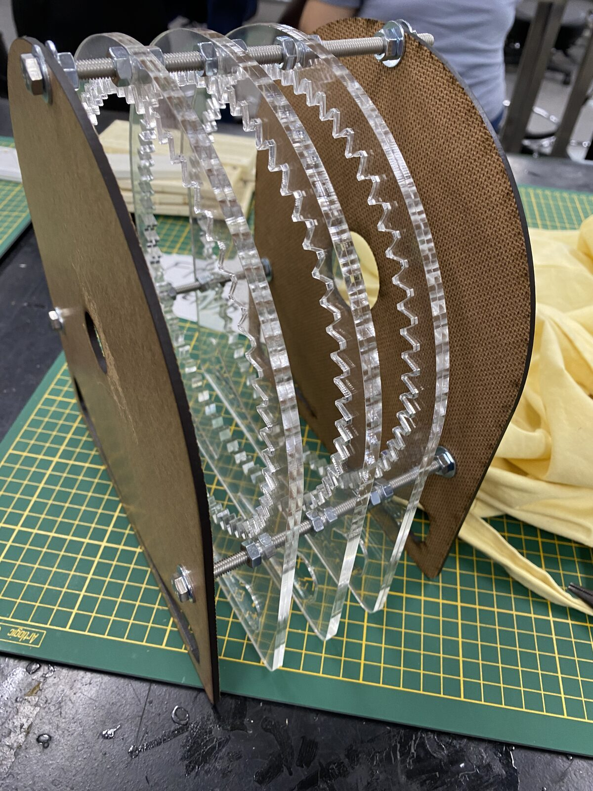
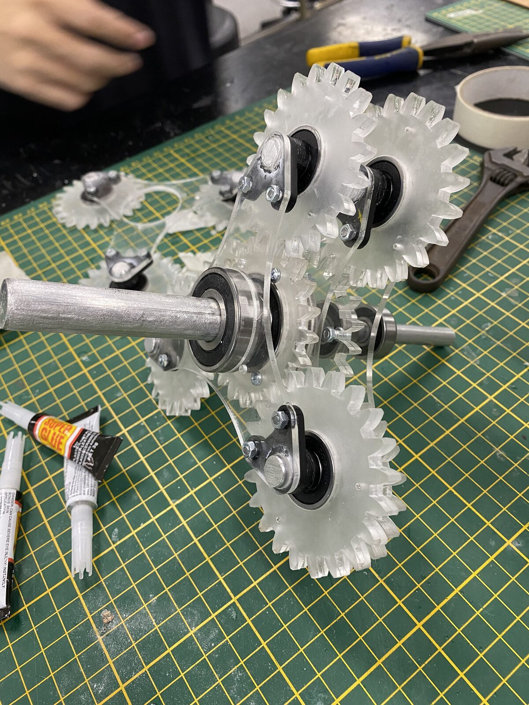
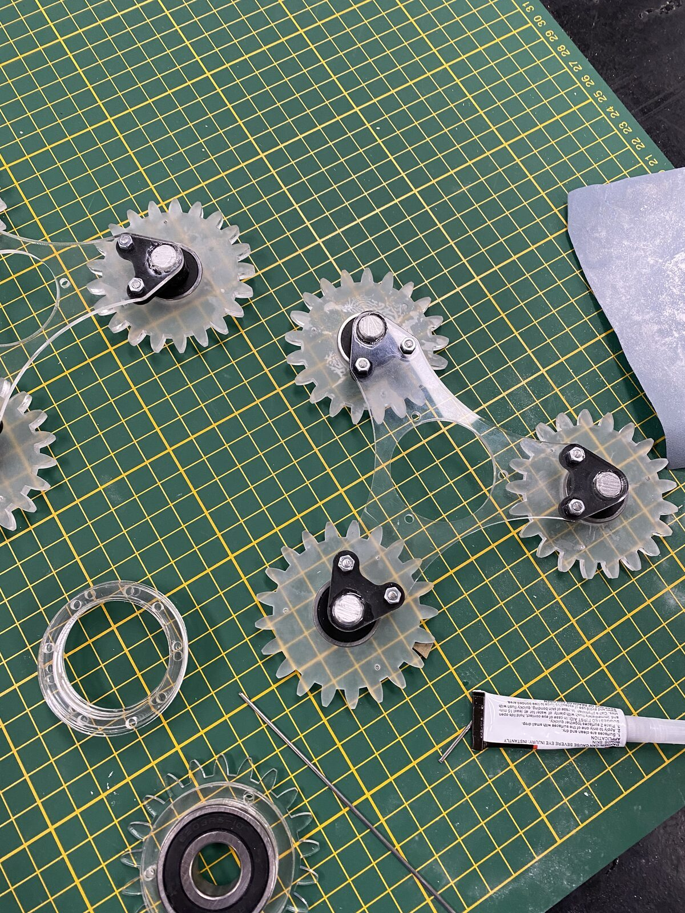
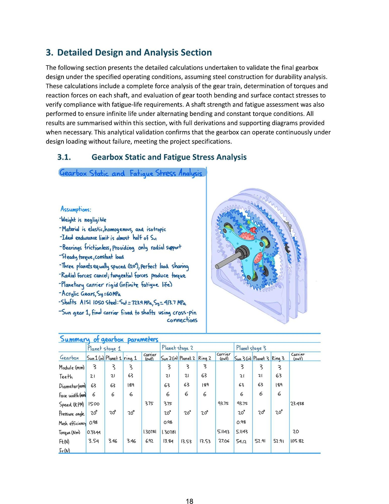
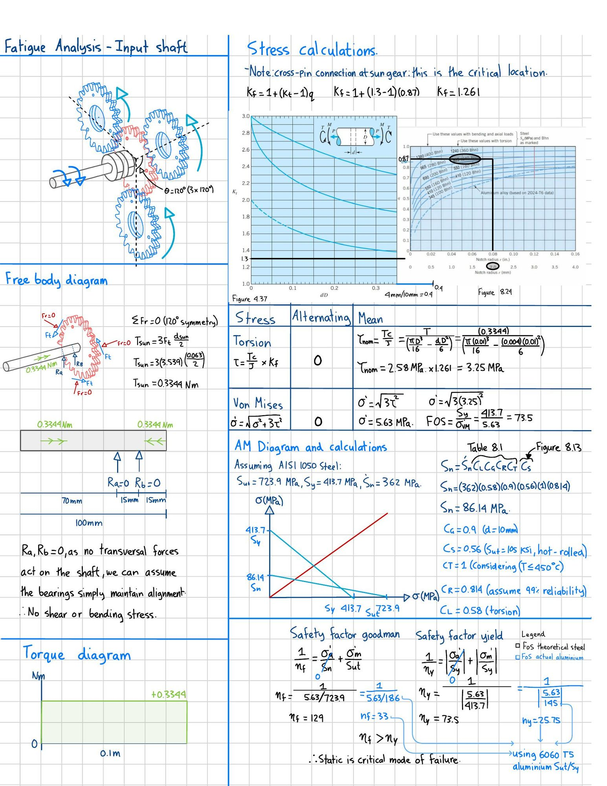
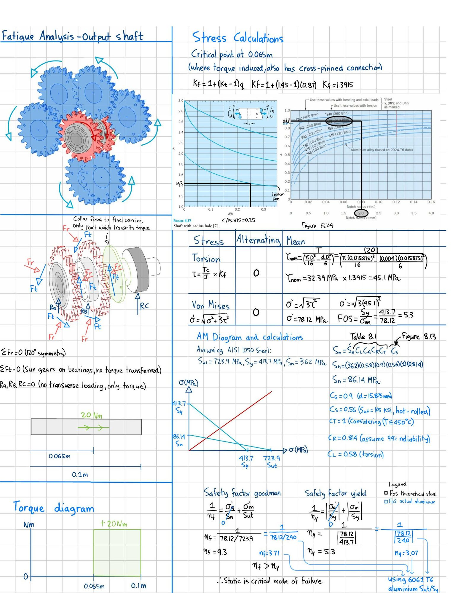
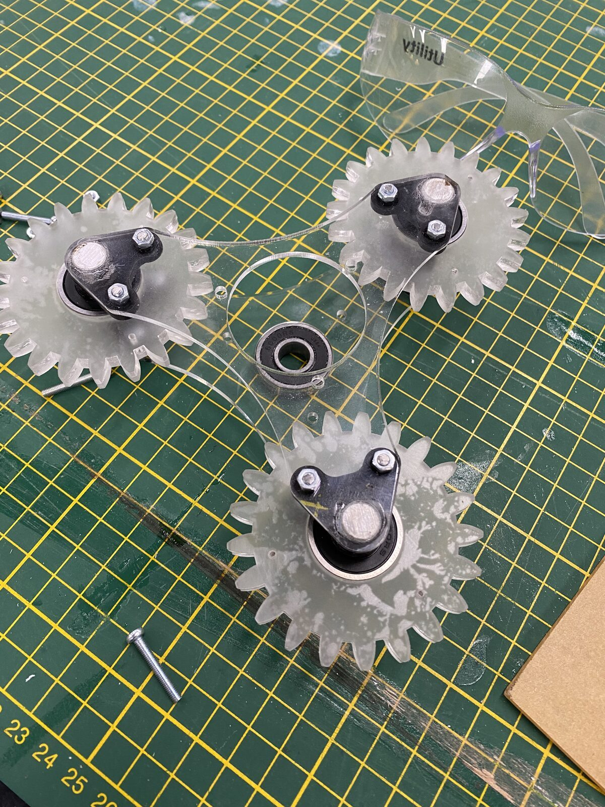
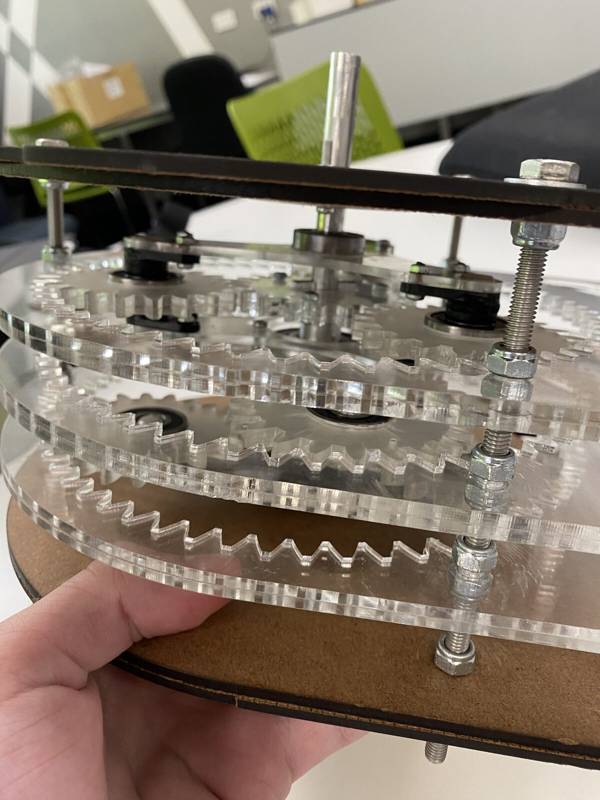
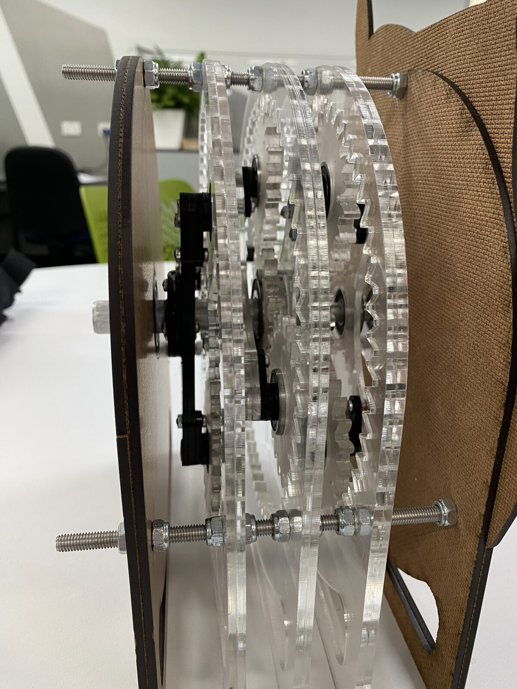

3-Stage Planetary Gearbox
Overview
A team of four designed, built, and tested a 3-stage reduction gearbox achieving a 64:1 ratio (within the 65:1 +/- 3% specification) delivering 20 Nm output torque from a 1500 RPM input. The prototype was fabricated from laser-cut acrylic with steel shafts and bearings.
My individual concept was a 3-stage planetary architecture using identical 4:1 reduction ratios per stage with 18-tooth sun gears, 18-tooth planet gears, and 54-tooth ring gears. This modular, symmetric design prioritised concentric load distribution and high torque density.


Detailed stress and fatigue analysis
I led Section 3 of the report: the complete static and fatigue stress analysis for the equivalent steel design. This included force analysis of the entire gear train, determination of torques and reaction forces on each shaft, and evaluation of gear tooth bending and surface contact stresses across all three stages using Lewis factors, AGMA contact stress criteria, and von Mises equivalent stress.
Shaft strength and fatigue assessments were performed on both the input shaft (at the sun gear/radius hole critical location, Kf = 1.261) and the output shaft (at the carrier collar/cross-pin connection, Kf = 1.392). Both shafts demonstrated infinite fatigue life under continuous operation, with the static mode identified as the critical failure mechanism in both cases.





Physical testing and failure analysis
The prototype achieved measured efficiency between 59% and 80.1%, with peak efficiency occurring between 500 and 700 RPM at 0.3 to 0.35 Nm input torque. Under incremental loading to the full 20 Nm design target, a sequential failure progression was documented:
- Housing torsional twist under increasing torque load
- Planet gear radial slip due to carrier plate deflection
- Tooth misalignment from combined twist and slip
- Tooth fracture at the final stage ring gear
Root cause was attributed to housing compliance rather than material strength inadequacy. The acrylic housing lacked sufficient torsional stiffness, and the single-sided carrier plates allowed cantilevered loading on the planet gear shafts. Recommendations included dual-sided carrier plates, increased gear face width, and rigid housing mounting to the test bench.

My contribution
- Individual concept design: 3-stage planetary architecture with identical 4:1 ratios
- Section 3 analysis lead: Lewis bending, AGMA contact, von Mises, fatigue life
- Shaft fatigue analysis using Modified Goodman criteria
- Sequential failure progression documentation and root cause analysis
- Fabrication participation and physical testing